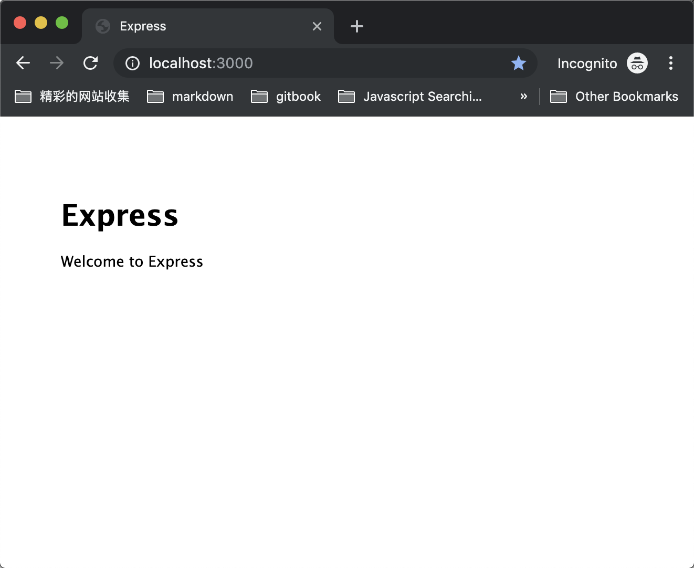
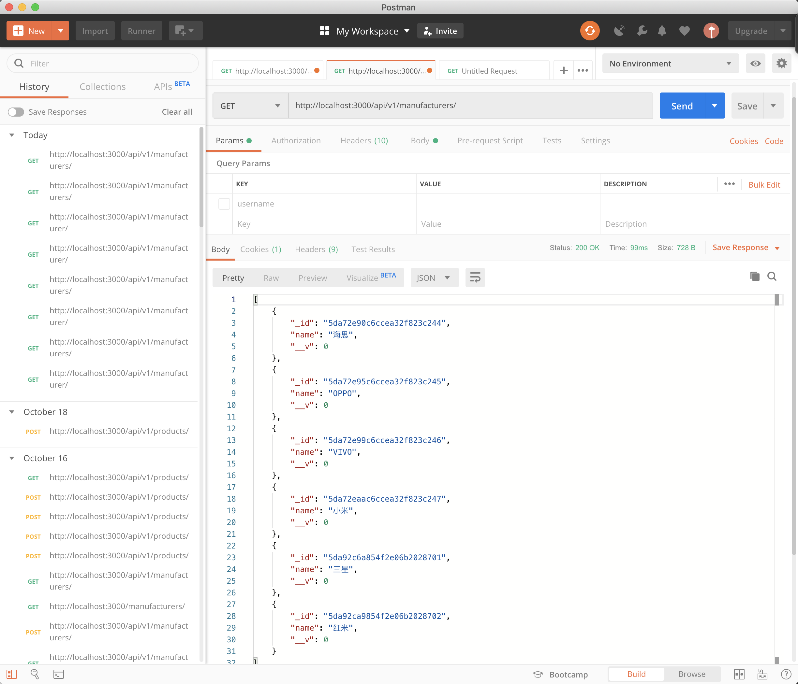
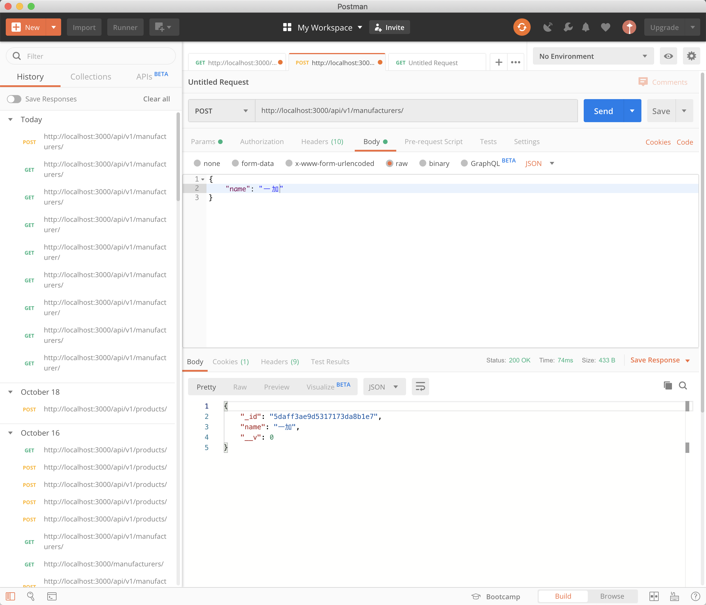
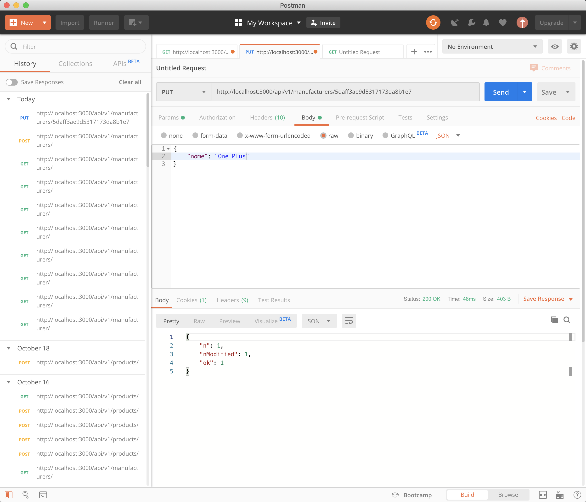
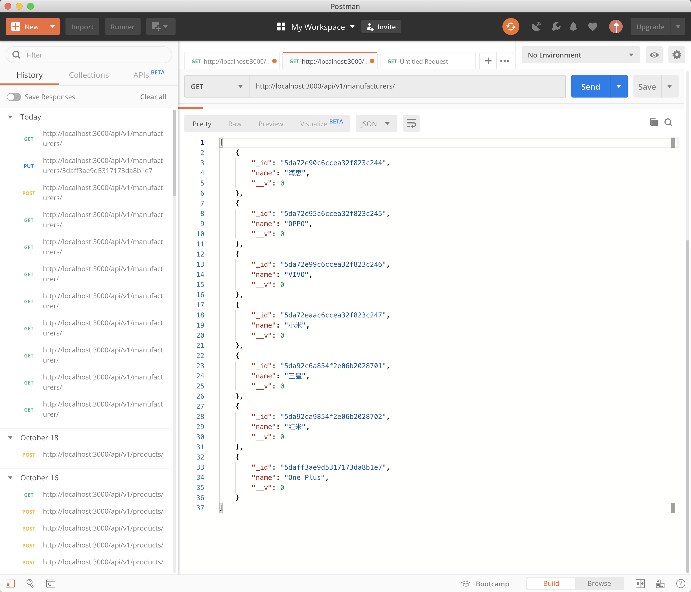
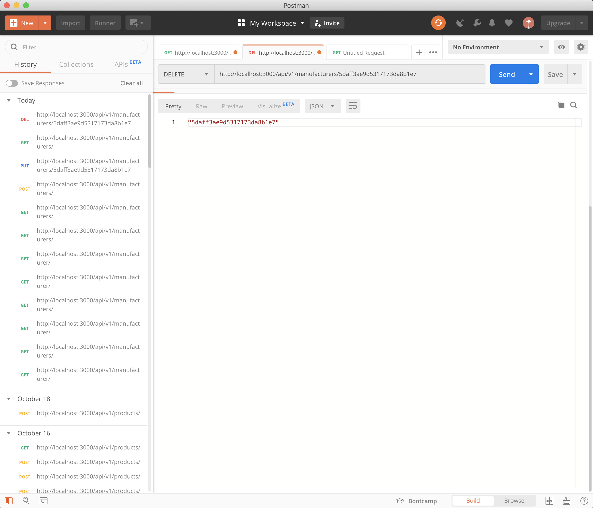
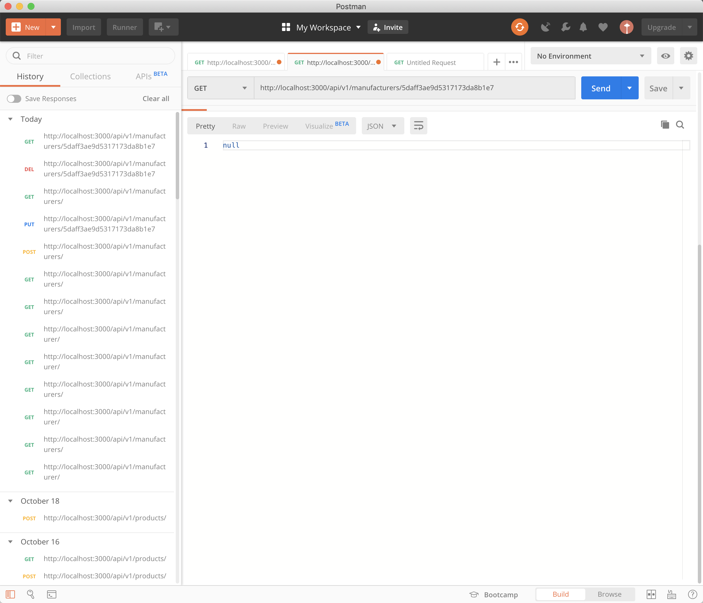
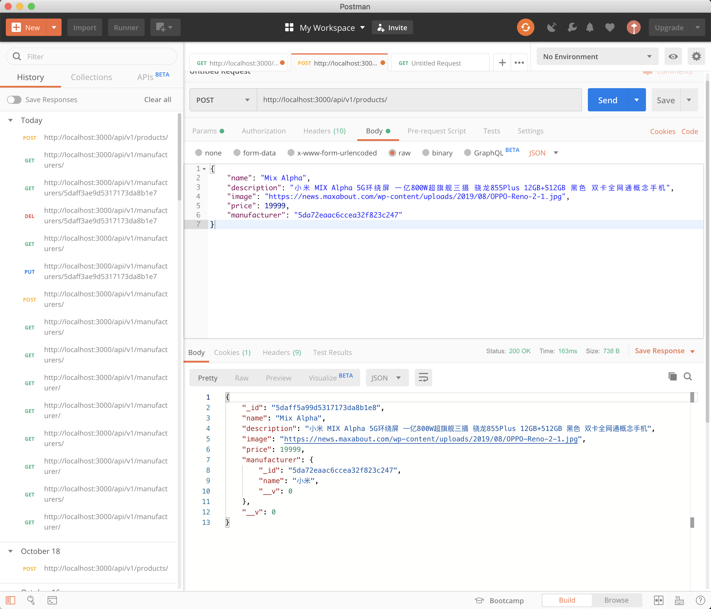

快速开始 我们在现实生活中所用到的一些网站、App，它们会将我们的数据进行保存，当我们关闭这些网站或者 App 之后，下次打开还能看到我们之前的一些文字、视频记录。
想要完成上面这些现实生活中应用的功能仅仅有我们在第一节中学到的知识是不够，为了让我们的迷你淘宝能够记录我们添加的商品，并且无论以后什么时候打开，都能获取我们之前的记录，我们需要 Vue 应用与后端进行交互。
接下来我将手把手带大家实现一个基于 Node 的 Express API后台应用。
安装依赖 安装 Node.js，你可以去 Node.js 官网下载安装包，Node.js 是跨平台的，所以不用担心你的电脑无法使用。
通过 Node.js 安装包安装，会同时安装 Node.js 包管理工具 Npm，用于便捷的管理项目依赖和下载第三方包。
打开终端，输入如下命令测试是否安装成功：
如果在你的终端有如上输出，那么代表你安装成功。
提示：通过上面安装包安装，你会安装最新的 Node 稳定版本，这可能和我的机器上的 Node 版本不一致，但是不用担心，本教程使用到的代码语法适用于绝大多数新的或更老的 Node。
安装 express，在绝大多数场景下，我们使用 express-generator 来初始化我们的 express 项目，本教程也不例外，在终端运行如下命令来安装：
npm install -g express-generator
打开终端，输入如下命令测试是否安装成功：
上面两个安装步骤已经足够完成我们的教程的学习，但是我想额外推荐你一款编辑器，VSCode，你可以通过访问 VSCode 官网安装。
VSCode 是一款非常优秀的开源编辑器，对 Node.js 开发者非常友好，相信你用了它就会爱不释手。
初始化项目 打开终端输入如下命令初始化我们的 Express 项目：
express --view=pug vue-online-shop-backend
当项目初始化成功之后，接下来通过如下命令开启项目：
cd vue-online-shop-backendnpm install npm start
接着打开浏览器，输入 http://localhost:3000/ 查看我们初始好的项目效果。

初探初始化代码 通过 express-generator 初始化的项目代码中，我们在整个教程中只需要了解下面四个文件：
app.jsbin/wwwroutes/index.jsviews/index.ejs
express 主要三个部分：
路由：routes
中间件：middlewares
模板引擎：template engine
因为我们是前后端分离的项目，所以这里我们并不需要模板引擎。
什么是前后端分离？就是后端只提供和处理数据，不渲染前端代码。
我们先来看一下 app.js 如下：
app.js var express = require ('express' );var path = require ('path' );var favicon = require ('serve-favicon' );var logger = require ('morgan' );var cookieParser = require ('cookie-parser' );var bodyParser = require ('body-parser' );var index = require ('./routes/index' );var users = require ('./routes/users' );var app = express();app.set('views' , path.join(__dirname, 'views' )); app.set('view engine' , 'ejs' ); app.use(logger('dev' )); app.use(bodyParser.json()); app.use(bodyParser.urlencoded({ extended : false })); app.use(cookieParser()); app.use(express.static(path.join(__dirname, 'public' ))); app.use('/' , index); app.use('/users' , users); app.use(function (req, res, next ) var err = new Error ('Not Found' ); err.status = 404 ; next(err); }); app.use(function (err, req, res, next ) res.locals.message = err.message; res.locals.error = req.app.get('env' ) === 'development' ? err : {}; res.status(err.status || 500 ); res.render('error' ); }); module .exports = app;
开头是一堆导包，然后通过调用 express() 初始化 express 实例，接着我们设置了模板引擎为 ejs，以及模板引擎的存放目录，然后就是一系列中间件的加载使用，最后导出 express 实例，丢给我们的 bin/www 进行调用并启动服务器。
这里我们可以看到，我们导入的两个路由 index 和 users，也和其他中间件一样被处理，所以在 express 中 “一切皆中间件”。
再来看一下 bin/www ，这个文件就是我们的 express 入口文件，在这个文件里导入了 express 实例 app，然后创建 Node.js 开发服务器，并监听端口，如果没有特殊指导，那么将监听 3000 端口，这也就是为什么我们在开头浏览器里面打开 http://localhost:3000/ 的原因。
bin/www #!/usr/bin/env node /** * Module dependencies. */ var app = require('../app'); var debug = require('debug')('api:server'); var http = require('http'); /** * Get port from environment and store in Express. */ var port = normalizePort(process.env.PORT || '3000'); app.set('port', port); /** * Create HTTP server. */ var server = http.createServer(app); /** * Listen on provided port, on all network interfaces. */ server.listen(port); server.on('error', onError); server.on('listening', onListening); /** * Normalize a port into a number, string, or false. */ function normalizePort(val) { var port = parseInt(val, 10); if (isNaN(port)) { // named pipe return val; } if (port >= 0) { // port number return port; } return false; } /** * Event listener for HTTP server "error" event. */ function onError(error) { if (error.syscall !== 'listen') { throw error; } var bind = typeof port === 'string' ? 'Pipe ' + port : 'Port ' + port; // handle specific listen errors with friendly messages switch (error.code) { case 'EACCES': console.error(bind + ' requires elevated privileges'); process.exit(1); break; case 'EADDRINUSE': console.error(bind + ' is already in use'); process.exit(1); break; default: throw error; } } /** * Event listener for HTTP server "listening" event. */ function onListening() { var addr = server.address(); var bind = typeof addr === 'string' ? 'pipe ' + addr : 'port ' + addr.port; debug('Listening on ' + bind); }
我们的 app.js 和 bin/www 文件里面还要很多其他代码，这里我们没有仔细去探究，因为我们的教程着重讲解 Vue 的知识点，而我们的后端完全是为了服务于如何探求 Vue 与后端交互，所以这里只讲解如何搭建一个 API 服务器，不了解这些 “样板” 代码其实对于搭建我们的 API 服务器没有太大的影响，具体学习我们后面会出一个以讲解 Node & Express 基础为核心的教程，敬请期待！
让我们再来看一看我们的路由部分 routes/index.js，路由是我们 API 服务器的核心，我们对数据进行增删改查都需要访问特定的路由接口，我们在整个教程中几乎都是围绕路由的操作。
routes/index.js var express = require ('express' );var router = express.Router();router.get('/' , function (req, res, next ) res.render('index' , { title : 'Express' }); }); module .exports = router;
上面的代码，首先导入 express，然后使用其属性方法生成了一个 router 实例，接着定义了 get 这一 HTTP 方法来处理以 GET 方法访问我们服务器地址为 / 时如何进行处理。
我们的 API 服务器实际上就是通过 HTTP 的各种方法（POST、DELETE、PUT、GET 等）访问我们定义的路由，进而对数据库进行相应的增删改查操作以获取我们期望的数据。
这里 express-generator 脚手架为我们生成的代码中单纯的渲染了我们的 index.ejs 模板，并给模板引擎传入了 title 为 Express 的参数。
最后导出我们的 index 路由。
最后是我们的 index.ejs ，这个就是我们访问 index 路由时渲染的模板，title 就是我们上面传入的 "Express" 字符串 。
views/index.ejs <!DOCTYPE html> <html> <head> <title><%= title %></title> <link rel='stylesheet' href='/stylesheets/style.css' /> </head> <body> <h1><%= title %></h1> <p>Welcome to <%= title %></p> </body> </html>
通过简单的讲解 express-generator 脚手架为我们生成的上面四个文件，我们学到了如下知识：
在 Express 中，一切皆中间件（Middlewares），我们通过组合中间件来处理复制的后端逻辑。
我们的 API 服务器实际上就是通过定义一系列路由，当以不同的 HTTP 方法访问这些路由接口时，对数据进行对应的增删改查操作。
虽然 Express 也可以渲染模板引擎，展示 HTML 内容，但是我们的 API 服务器不需要用到它，我们的前端交给了 Vue 来做。
接入 MongoDB 数据库 在我们的第一篇教程 中，我们在前端硬编码了一些假数据，虽然这使得我们每次打开我们的 Vue 应用可以一样的效果，但是当我们对数据做出了修改，并在下一次打开时，会发现，我们的网站像“失忆”了一样。
解决数据持久化存储最流行的方案无疑是数据库，而 MongoDB 凭借其优异的性能、可扩展性和灵活的数据模式，从众多数据库产品中脱颖而出。并且，MongoDB 的核心功能是基于 BSON（Binary JSON）实现的，甚至提供了 JavaScript Shell，因此在 Node 社区更是深受欢迎。所以，我们也将利用 MongoDB 实现 Instagrammy 的数据持久化存储。MongoDB 可以从其官网 上下载。下载并安装好之后，新打开一个终端（命令控制台），运行以下命令打开数据库（Windows 用户可以搜索 mongo.exe 并打开）：
然后我们安装 Mongoose 这个 npm 包：
Mongoose 是 MongoDB 最流行的 ODM（Object Document Mapping，对象文档映射），使用起来要比底层的 MongoDB Node 驱动更方便。
package.json "debug": "~2.6.9", "ejs": "~2.5.7", "express": "~4.15.5", [tuture-add] "mongoose": "^5.7.5", "morgan": "~1.9.0", "serve-favicon": "~2.4.5" }
接着我们在我们的 app.js 文件中导入 mongoose ，并且通过 mongoose 提供的接口连接我们的 MongoDB 数据库
app.js var express = require ('express' );var path = require ('path' );[tuture-del]var favicon = require ('serve-favicon' ); var logger = require ('morgan' );var cookieParser = require ('cookie-parser' );var bodyParser = require ('body-parser' );[tuture-add]const mongoose = require ('mongoose' ); var index = require ('./routes/index' );var users = require ('./routes/users' );[tuture-omit] app.set('views' , path.join(__dirname, 'views' )); app.set('view engine' , 'ejs' ); [tuture-add] [tuture-add] [tuture-add]mongoose.connect(`mongodb://localhost:27017/test` ); [tuture-add] [tuture-add] app.use(logger('dev' ));
接着我们的终端中切换到此项目根目录下，通过 npm start 运行我们的服务器，我们就在 Express 中连接上了我们的 MongoDB 数据库，虽然现在还看不到任何效果，我们马上会编写路由来操作数据库来测试连接的有效性。
允许资源跨域访问 接着我们要做一点额外的操作，尽管它看起来和我们的项目没什么关联性，但是确是一个必要的一环，那就是开启 CORS。
我们打开 app.js 文件，添加如下代码：
app.js app.set('view engine' , 'ejs' ); [tuture-del] mongoose.connect(`mongodb://localhost:27017/test` ); [tuture-add] [tuture-add]app.all('/*' , function (req, res, next ) [tuture-add] [tuture-add] res.header("Access-Control-Allow-Origin" , "*" ); [tuture-add] res.header('Access-Control-Allow-Methods' , 'GET,PUT,POST,DELETE,OPTIONS' ); [tuture-add] [tuture-add] res.header('Access-Control-Allow-Headers' , 'Content-type,Accept,X-Access-Token,X-Key' ); [tuture-add] if (req.method == 'OPTIONS' ) { [tuture-add] res.status(200 ).end(); [tuture-add] } else { [tuture-add] next(); [tuture-add] } [tuture-add]}); [tuture-add]
CORS （Cross-Origin Resources Sharing）是用来限制此域名下的资源访问解决方案，当它关闭时，另外一个域名访问此域名的资源时会被拒绝。如果想详细了解什么是 CORS，这里推荐一篇阮一峰 的文章，里面很细致的讲解了 CORS 的原理。
通常意义上，上面的代码存在很多问题，我们一般意义上会使用 NPM 包 cors 来解决，当然我们这里使用了比较简单粗暴的方式。
设计数据库的 Schemas 和 Models 我们要在服务器中通过 mongoose 与 MongoDB 数据库进行交互，需要定义 Schema 和 Model。通过定义它们来告诉 mongoose 你需要的数据结构和对应的数据类型是什么。
我们来创建 model/index.js 文件编写我们的 Schema 。
model/index.js const mongoose = require ('mongoose' );const Schema = mongoose.Schema;const model = mongoose.model.bind(mongoose);const ObjectId = mongoose.Schema.Types.ObjectId;const productSchema = Schema({ id: ObjectId, name: String , image: String , price: Number , description: String , manufacturer: { type : ObjectId, ref : 'Manufacturer' } }); const manufacturerSchema = Schema({ id: ObjectId, name: String , }); const Product = model('Product' , productSchema);const Manufacturer = model('Manufacturer' , manufacturerSchema);module .exports = { Product, Manufacturer };
Schema 接收一个 JavaScript 对象来描述我们需要的数据结构和对应的数据类型，除了我们熟知的像 String、Number 等数据类型外，ObjectId 是一个特殊的数据类型，我们用它来定义我们的单个 MongoDB 文档的主键，用于标志存储数据的唯一性。
我们还可以看到，在我们的 productSchema 中，manufacturer 数据结构我们定义了一个 ref 属性，这是 MongoDB 为我们提供的类似关系数据库的外键功能，允许我们创建一对多的数据文档，所以 productSchema 的 manufacturer 属性对应着的数据类型为一条 Manufacturer 记录。
接着我们通过 model 来创建对于的数据模型，然后导出我们创建好的数据模型。这里的 model 就是经典的 MVC 设计模式中的 Model
完成 API 路由 路由是 Express 的关键组成部分，也是客户端与服务器进行交互的入口，在 Express 路由中接受两个参数：Request 和 Response，一个用来获取客户端的请求，一个用来发送给客户端服务器的响应。
打开 app.js 文件，加入如下代码：
app.js var index = require ('./routes/index' );var users = require ('./routes/users' );[tuture-add]const api = require ('./routes/api' ); var app = express();[tuture-omit] app.use('/' , index); app.use('/users' , users); [tuture-add]app.use('/api/v1' , api); app.use(function (req, res, next )
可以看到，我们导出了 api 路由，并定义了访问路径 /api/v1。所有访问 /api/v1 及其子路径如 /api/v1/xxx 都会激活 api 处理函数，在经典的 MVC 设计模式中，api 也被成为 Controllers 。
接着我们编写 api Controllers，在这里面定义操作商品和制造商的路由接口，这里我们将采用经典的 RESTful API 来编写我们的路由接口：
routes/api/index.js const express = require ('express' );const router = express.Router();const productController = require ('../../controllers/product' );const manufacturerController = require ('../../controllers/manufacturer' );router.get('/manufacturers' , manufacturerController.all); router.get('/manufacturers/:id' , manufacturerController.byId); router.post('/manufacturers' , manufacturerController.create); router.put('/manufacturers/:id' , manufacturerController.update); router.delete('/manufacturers/:id' , manufacturerController.remove); router.get('/products' , productController.all); router.get('/products/:id' , productController.byId); router.post('/products' , productController.create); router.put('/products/:id' , productController.update); router.delete('/products/:id' , productController.remove); module .exports = router;
可以看到，我们将 index Controller 里面导入了我们的 productController 和 manufacturerController 。然后定义了一系列路由。
这里操作 manufacturer 的前五个路由的功能如下：
GET /manufacturers 获取所以的制造商（manufacturers） GET /manufacturers/:id 获取单个制造商，这里 :id 代表动态路由，用于匹配任意字符串：/manufacturers/<any-string>。POST /manufacturers 用户创建单个制造商PUT /manufacturers/:id 用于修改单个制造商DELETE /manufacturers/:id 用于删除单个制造商
对应的 product 的五个路由功能如下：
GET /products 获取所以的产商品（products） GET /products/:id 获取单个商品，这里 :id 代表动态路由，用于匹配任意字符串：/products/<any-string>。POST /products 用户创建单个商品PUT /products/:id 用于修改单个商品DELETE /products/:id 用于删除单个商品
最后我们导出我们的路由。
接下来我们来看一看具体的 manufacturer Controller。
controllers/manufacturer.js const Model = require ('../model' );const { Manufacturer } = Model;const manufacturerController = { all(req, res) { Manufacturer.find({}) .exec((err, manfacturers ) => res.json(manfacturers)) }, byId(req, res) { const idParams = req.params.id; Manufacturer .findOne({ _id : idParams }) .exec((err, manufacturer ) => res.json(manufacturer)); }, create(req, res) { const requestBody = req.body; const newManufacturer = new Manufacturer(requestBody); newManufacturer.save((err, saved ) => { Manufacturer .findOne({ _id : newManufacturer._id }) .exec((err, manfacturer ) => res.json(manfacturer)) }) }, update(req, res) { const idParams = req.params.id; let manufacturer = req.body; Manufacturer.updateOne({ _id : idParams }, { ...manufacturer }, (err, updated) => { res.json(updated); }) }, remove(req, res) { const idParams = req.params.id; Manufacturer.findOne({ _id : idParams }).remove( (err, removed ) => res.json(idParams) ) } } module .exports = manufacturerController;
可以看到我们定义了一个 manufacturerController 对象，用来组织一系列对 manufacturer 进行增删改查的操作。
我们在开头导入了我们之前定义的 ManufacturerModel，这是 Mongoose 为我们提供的操作数据库的接口，我们通过定义在 Model 上的一系列如 find、findOne、updateOne、deleteOne 执行我们对数据的增删改成操作。
最后是我们的 product Controller ，它内部的操作和我们上面讲到的 manufacturer Controller 基本一致。
controllers/product.js const Model = require ('../model' );const { Product } = Model;const productController = { all(req, res) { Product.find({}) .populate('manufacturer' ) .exec((err, products ) => res.json(products)) }, byId(req, res) { const idParams = req.params.id; Product .findOne({ _id : idParams }) .populate('manufacturer' ) .exec((err, product ) => res.json(product)); }, create(req, res) { const requestBody = req.body; const newProduct = new Product(requestBody); newProduct.save((err, saved ) => { Product .findOne({ _id : newProduct._id }) .populate('manufacturer' ) .exec((err, product ) => res.json(product)) }) }, update(req, res) { const idParams = req.params.id; const product = req.body; console .log('idParams' , idParams); console .log('product' , product); Product.updateOne({ _id : idParams }, { ...product }, (err, updated) => { res.json(updated); }) }, remove(req, res) { const idParams = req.params.id; Product.findOne({ _id : idParams }).remove( (err, removed ) => res.json(idParams) ) } } module .exports = productController;
编写完上面的代码并保存，打开终端输入 npm start 来开启我们的服务器。
因为我们的服务器在开启时要链接 MongoDB 数据库，所以要确保本地的 MongoDB 数据库已经开启，我们可以通过如下命令来开启：
好了，现在我们的 API 服务器就搭建完成了，现在我们通过 API 测试工具 POSTman 来测试一下我们 API 是否成功。
测试 GET /api/v1/manufacturers：

测试 POST /api/v1/manufacturers：我们添加手机制造商 "一加"

测试 PUT /api/v1/manufacturers/:id：这里我们把 "一加" 改成 "One Plus"


测试 DELETE /api/v1/manufacturers/:id：我们把刚刚添加的 "一加" 删掉


最后测试添加商品 product，POST /api/v1/products：这里我们在定义 product 的数据属性时，加入了 Manufacturer 作为外键，所以创建的时候对应的 manufacturer 属性要为某个 Manufacturer 的 ObjectId，比如我们这里添加小米的新产品 Mix Alpha ：

可以看到我们添加了 manufacturer 为 5da72eaac6ccea32f823c247 的小米制造商的新手机 "Mix Alpha"
小结 自此，我们的 API 服务器就搭建完成了，在这篇教程里面我们学到了如下知识：
了解 Express 的路由以及如何用 mongoose 连接 MongoDB 数据库
编写路由、Model 和 Controllers
使用 POSTman 来测试我们编写的 API
相信通过本篇教程的学习，你对使用 Node 和 Express 编写 API 后端服务器有了一个基本的了解，现在我们了解了 Vue 基础知识，了解了如何搭建后端服务器，接下来我们将考虑如何使用 Vue 构建大型应用，下一篇教程我们再见！